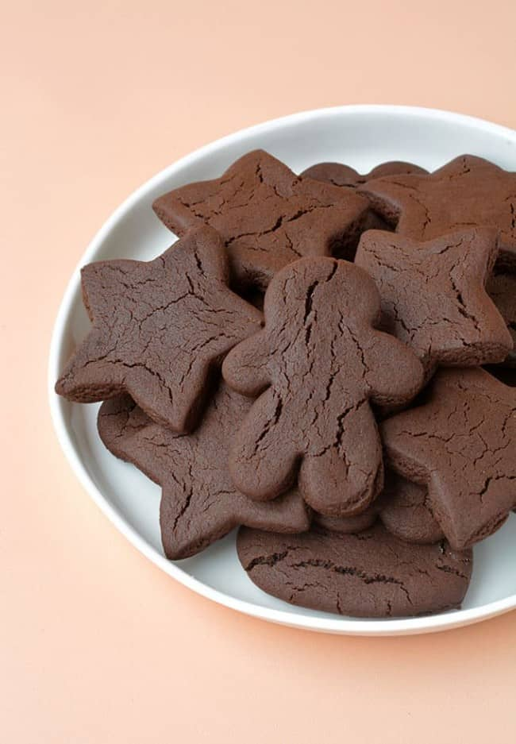

Gingerbread Chocolate Cookies

Description
A fun recipe to make together with the kids!
Ingredients
- 115 grams (1/2 cup or 1 stick) unsalted butter, room temperature
- 135 grams (3/4 cup) brown sugar
- 60 ml (1/4 cup) molasses or golden syrup
- 1 teaspoon vanilla extract
- 1 egg yolk
- 245 grams (1 and 3/4 cup) plain flour or all purpose flour, plus extra for dusting
- 40 grams (1/2 cup) cocoa powder, sifted
- 1 teaspoon baking soda
- 1 teaspoon ground ginger
- 1/4 teaspoon cinnamon
- 1/4 teaspoon nutmeg
- 1/4 teaspoon salt
- Melted chocolate, to drizzle
Steps
- In a large mixing bowl, beat butter and sugar using an electric mixer on medium speed until combined. Add vanilla, molasses and egg yolk. Beat again to form a creamy mixture.
- Sift in flour, cocoa, baking soda, ginger, cinnamon, nutmeg and salt and beat briefly until dough starts to come together. Use your hands to bring dough together to form smooth round disc. Wrap the dough in plastic and pop in the fridge for at least 30 minutes to rest.
- Preheat the oven to 180 C (350 F) standard / 160 C (320 F) fan-forced. Line two cookie sheets or oven trays with baking paper or parchment paper. Lightly flour your bench and roll out the dough using a rolling pin to 1/8 inch thickness. Dust your rolling pin as you go to prevent the dough from sticking.
- Cut out shapes and place the cookies onto the prepared trays. Bake for 8-10 minutes. Remove from the oven and transfer cookies to a wire rack to cool. Drizzle with melted chocolate.